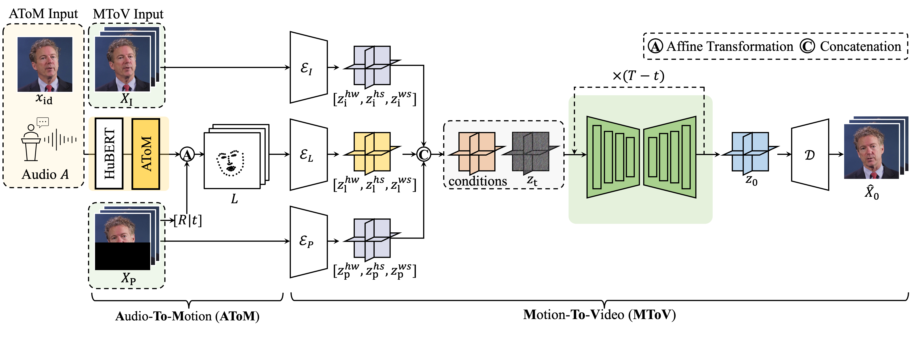
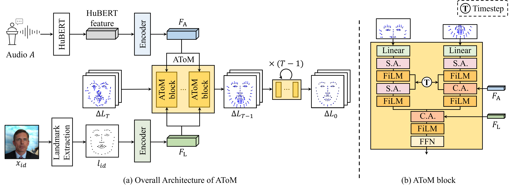

We present the Motion-Disentangled diffusion model for high-fidelity Talking head generation, dubbed MoDiTalker. This framework generates high-quality talking head videos through a novel two-stage, motion-disentangled diffusion models.
Abstract
Conventional generative adversarial networks (GANs)-based models for talking head generation often exhibit a limited quality and an unstable training. Recent approaches based on diffusion models address these limitations and improve the fidelity, but they still encounter challenges including extensive sampling time and the difficulty of maintaining temporal consistency due to high stochasticity of diffusion model. To overcome these challenges, we propose a novel motion-disentangled diffusion model for high-quality talking head generation, dubbed MoDiTalker. We introduce the two modules: audio-to-motion (AToM), designed to generate a synchronized lip motion from audio, and motion-to-video (MToV), designed to produce high-quality video clips corresponding to generated motion. AToM excels in capturing the subtle movements of lip motion, avoiding mode collapse with its high stochasticity derived from diffusion models. In addition, MToV improves the temporal consistency by utilizing the efficient tri-plane representation. Our experiments conducted on the standard benchmark demonstrate that our model achieves superior performance that surpasses the existing models. We also provide extensive ablation studies and user study results. Our code will be made publicly available.
Overall Framework
Overall network architecture of MoDiTalker. Our framework consists of two distinct diffusion models: Audio-to-Motion (AToM) and Motion-to-Video (MToV). AToM aims to generate lip-synchronized facial landmarks, given an identity frame and audio input, as conditions. MToV generates high-fidelity talking head videos using synthesized facial landmarks from AToM, identity frames, and pose frames as conditions.
Audio-To-Motion (AToM)
Overview of the Audio-to-Motion (AToM) diffusion model: (a) AToM is a transformer-based diffusion model that learns the residual between the initial landmark and the landmark sequence, using the audio embedding and the initial landmark embedding as conditions. In addition, (b) we design AToM block to process lip-related (upper-half) and lip-unrelated (lower-half) landmarks separately, allowing the model to focus more on generating lip-related movements while preserving the facial shape of the speaker.
Talking Head Generation Results
Self-reconstruction results of MoDiTalker Results in self-reconstruction setting, in which exists the reference video.
One-shot setting results of MoDiTalker Results of in one-shot setting, in which the reference image is the single frame of the video.
Cross-id results of MoDiTalker Results in cross-id setting, in which the identity of audio and reference frames are different. Those results are generated for the same audio, with different identity.
Out-of-Distribution results of MoDiTalker Results in out-of-distribution cross-id setting. The left video is the generated result of the first stage, AToM, and the right video is the final result of MoDiTalker.